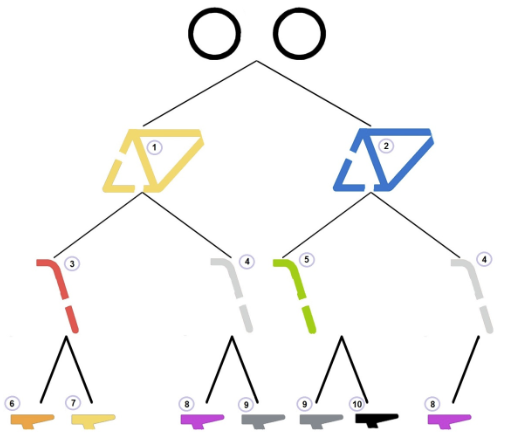

ビーバータウンでは、カラフルでおしゃれな自転車が人気です。ただし、組み合わせられる部品は決められています。 部品の組み合わせは、下の図のように、いちばん上の車輪から矢印をたどりながら選んでいきます。最初は車体の色を選び、次にハンドルの棒（ぼう）の色を選び、最後にイスの色を選びます。 部品には1から10の番号が付けられています。

上の図から作ることができない自転車はどれでしょう。正解は「B」
A) B) C) D)図の一番上の車輪から順に下に伸（の）びる線を当てはまるものがあるかを見ていきます。
Aの組合せは1-3-6とたどれば作ることができます。
Bの組合せは1-4まではたどれますが、サドル(6)が8,9のどちらでもないないので作ることができません。
Cの組合せは1-4-9とたどれば作ることができます。
Dの組合せは2-4-8とたどれば作ることができます。
なお、作ることができる組み合わせは次の7通りです。
1-3-6
1-3-7
1-4-8
1-4-9
2-5-9
2-5-10
2-4-8
部品の組合せが描かれた、枝分かれしていく図は「木構造」と呼ばれます。
木構造はこの問題のように可能性のある組合せを示したり、情報の階層構造を示すためなどに用いられます。